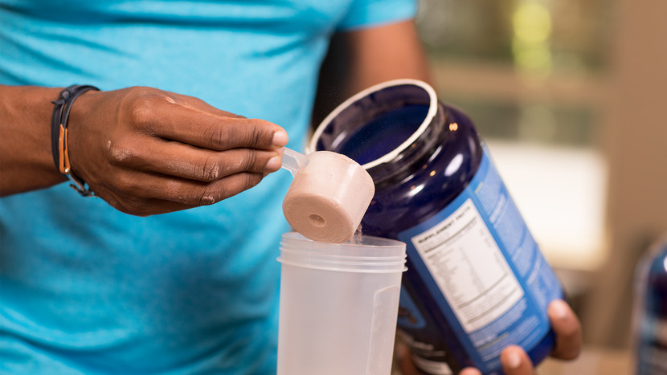

Whey is one of the best supplements for helping you build muscle and lose fat. Here's what makes it so powerful.
To plenty of fitness diehards, whey protein can seem like its own food group. (Spoiler alert: It's not). But despite our long-term commitment to this protein powder, the research is ongoing. Plenty of questions still remain on what makes it so great, what is the best form to take, and what is the optimal timing for it. Grab your shaker bottle and read on to get the full scoop on whey protein.
Whey comes from milk, which is actually comprised of two proteins: casein, which makes up approximately 80 percent of milk protein, and whey, which makes up the other 20 percent. When cheese is produced, whey is separated from the solid curds and can be found in the liquid that is left behind.
Once separated, it goes through several more processing steps to become what most people recognize as whey protein: a relatively tasteless powder that can be added to shakes, protein bars, or even baked goods. It's a common protein-booster in commercial smoothies, bars, cereals, and plenty of other foods, but can also be taken on its own. Like all proteins—chicken, beef, egg, soy, rice, hemp, and so on—whey is composed of amino acids, which the body can use for muscle growth and tissue repair. But it's whey's high concentration of branched-chain amino acids (BCAAs), especially leucine, that sets this protein apart from the others.
While most people can name a benefit to supplementing with whey protein, the same can't be said about explaining the differences between the different forms of whey. Fancy names given to the different forms of whey more or less tell you how the protein has been processed and filtered.
Whey Protein Concentrate: Whey concentrate is about 80 percent protein, and typically contains slightly higher amounts of fat and carbohydrates than the other two varieties. It's still relatively low in both, although plenty of powders and ready-to-drink protein products add extra sugar and fat back in.
Whey Protein Isolate: Whey protein isolate has had all fat and lactose removed, boosting its protein concentration to 90-95 percent protein.
Whey Protein Hydrolysate: Hydrolysed whey is often referred to as "pre-digested," because it has already undergone partial breakdown. This reduces digestion time compared to the other two forms of protein. Both whey protein concentrate and whey protein isolate can be made into whey protein hydrolysate, so its protein content can vary.